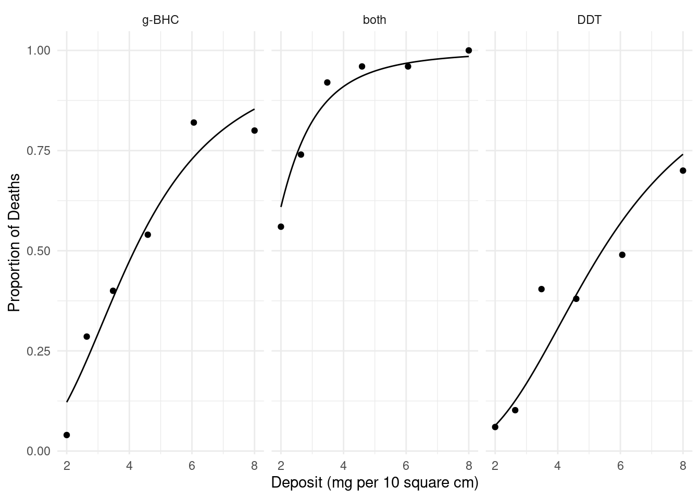
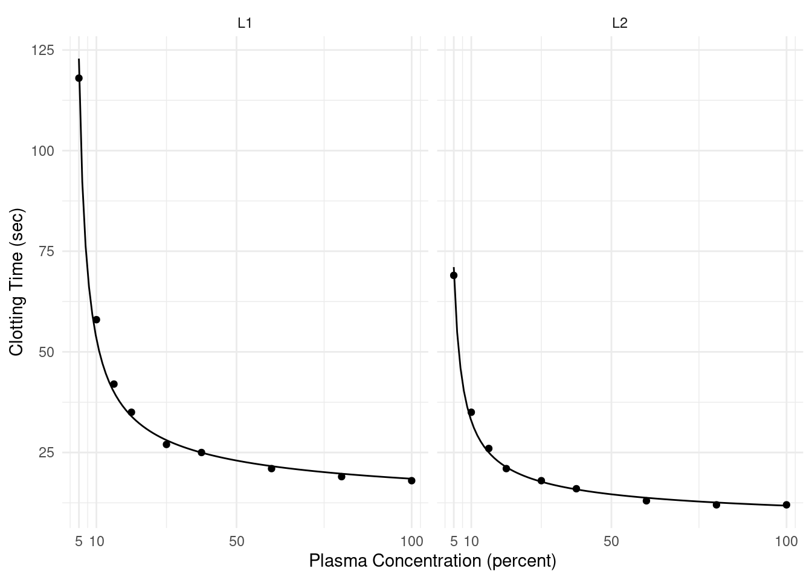
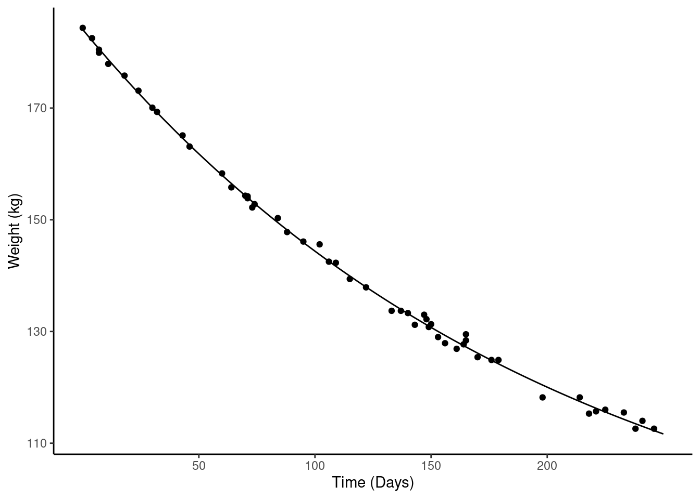
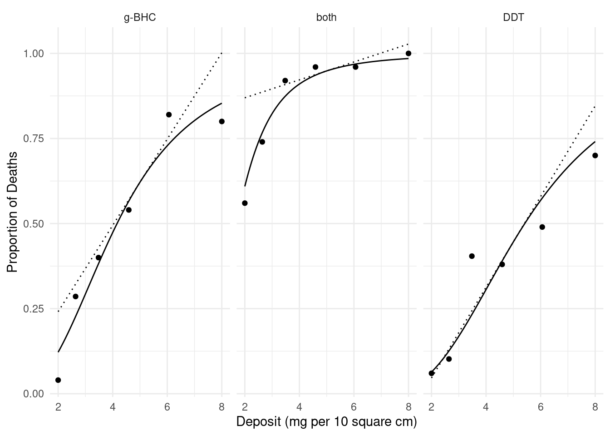
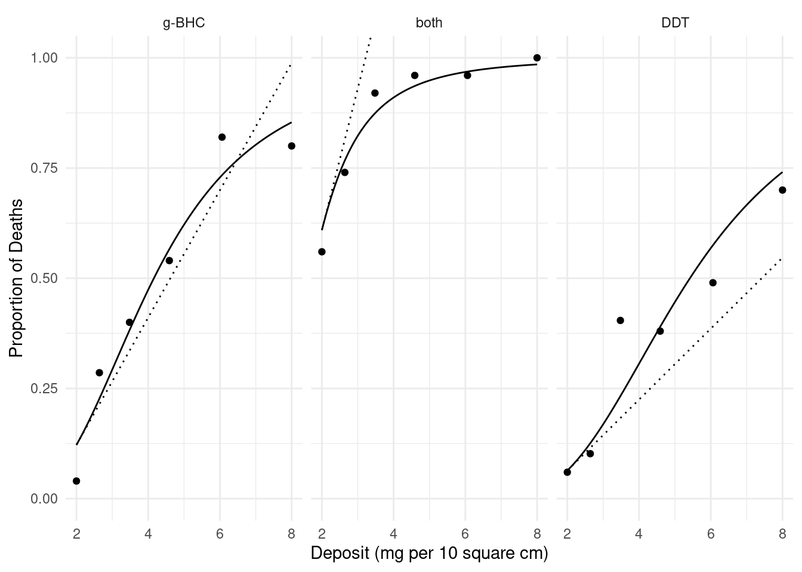
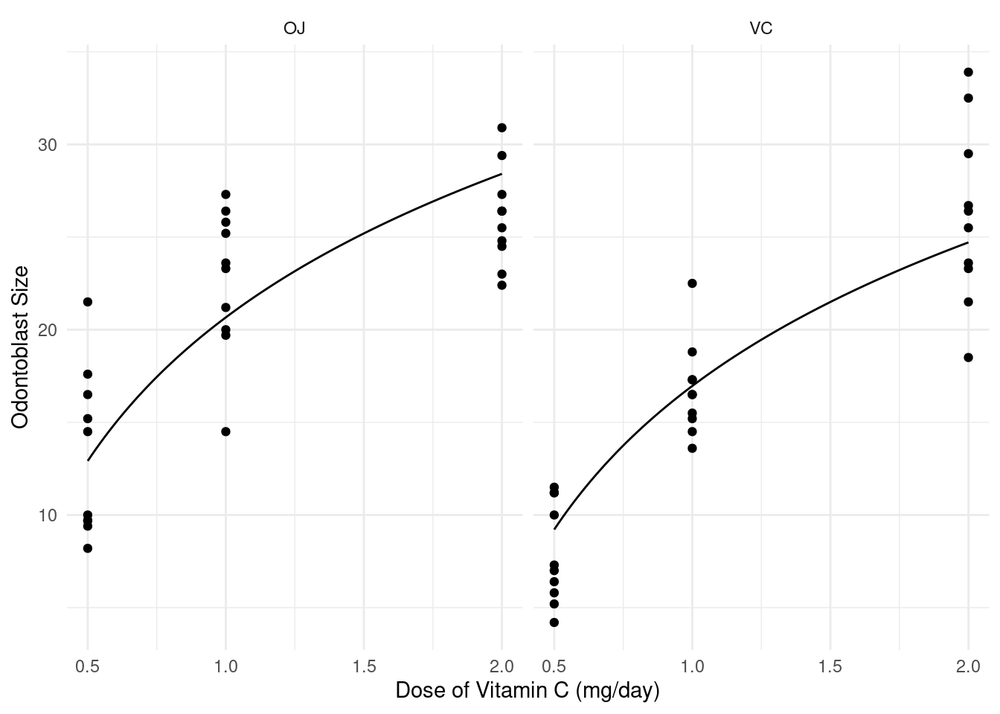

Friday, Mar 31
You can also download a PDF copy of this lecture.
Discrete Marginal Effects
Consider a regression model with (without loss of generality) two explanatory variables, \(X_1\) and \(X_2\). A discrete marginal effect is the change in the expected response when we change an explanatory variable.
For example, if we have a regression model where \(E(Y)\) is a function of \(X_1\) and \(X_2\), the discrete marginal effect of changing \(X_1\) from \(x_b\) to \(x_a\) is \[ E(Y|X_1 = x_a, X_2 = x_2) - E(Y|X_1 = x_b, X_2 = x_2). \] That is, the change in the expected response when \(X_1\) is changed from \(x_b\) to \(x_a\). (Note: When we talk about a change in the expected response or the “effect” of a change in an explanatory variable, we do not necessarily mean that this is a causal relationship.)
In a linear model a discrete marginal effect is basically what is
done by contrast.
Example: Recall our model for the
whiteside data. The function margeff in the
trtools package will estimate a discrete marginal
effect.
m <- lm(Gas ~ Insul + Temp + Insul:Temp, data = MASS::whiteside)
summary(m)$coefficients Estimate Std. Error t value Pr(>|t|)
(Intercept) 6.8538 0.13596 50.409 7.997e-46
InsulAfter -2.1300 0.18009 -11.827 2.316e-16
Temp -0.3932 0.02249 -17.487 1.976e-23
InsulAfter:Temp 0.1153 0.03211 3.591 7.307e-04The model is \[
E(Y_i) = \beta_0 + \beta_1 a_i + \beta_2 t + \beta_3 a_it_i,
\] where \(Y_i\) is gass
consumption, \[
a_i =
\begin{cases}
1, & \text{if the $i$-th observation is after insulation}, \\
0, & \text{otherwise}.
\end{cases}
\] So the marginal effect of increasing temperature from \(t_b = 2\) to \(t_a = 7\) after insulation is \[
E(Y|a = 1, t = 7) - E(Y|a = 1, t = 2) = 5(\beta_2 + \beta_3).
\] Before insulation it is \[
E(Y|a = 0, t = 7) - E(Y|a = 0, t = 2) = 5\beta_2.
\] We can estimate this using the lincon or
contrast functions.
library(trtools)
lincon(m, a = c(0,0,5,5)) # marginal effect after insulation estimate se lower upper tvalue df pvalue
(0,0,5,5),0 -1.39 0.1146 -1.62 -1.16 -12.12 52 8.936e-17lincon(m, a = c(0,0,5,0)) # marginal effect after insulation estimate se lower upper tvalue df pvalue
(0,0,5,0),0 -1.966 0.1124 -2.192 -1.741 -17.49 52 1.976e-23contrast(m, cnames = c("Before","After"),
a = list(Temp = 7, Insul = c("Before","After")),
b = list(Temp = 2, Insul = c("Before","After"))) estimate se lower upper tvalue df pvalue
Before -1.966 0.1124 -2.192 -1.741 -17.49 52 1.976e-23
After -1.390 0.1146 -1.620 -1.160 -12.12 52 8.936e-17The function margeff (also from the
trtools package) is specifically designed to estimate
marginal effects (and other things) and works similarly to
contrast.
margeff(m, cnames = c("Before","After"),
a = list(Temp = 7, Insul = c("Before","After")),
b = list(Temp = 2, Insul = c("Before","After"))) estimate se lower upper tvalue df pvalue
Before -1.966 0.1124 -2.192 -1.741 -17.49 52 1.976e-23
After -1.390 0.1146 -1.620 -1.160 -12.12 52 8.936e-17We can also estimate the discrete marginal effect of adding insulation at different temperatures.
contrast(m, cnames = c("0C","5C","10C"),
a = list(Temp = c(0,5,10), Insul = "After"),
b = list(Temp = c(0,5,10), Insul = "Before")) estimate se lower upper tvalue df pvalue
0C -2.1300 0.18009 -2.491 -1.769 -11.827 52 2.316e-16
5C -1.5535 0.08777 -1.730 -1.377 -17.699 52 1.155e-23
10C -0.9769 0.18583 -1.350 -0.604 -5.257 52 2.784e-06margeff(m, cnames = c("0C","5C","10C"),
a = list(Temp = c(0,5,10), Insul = "After"),
b = list(Temp = c(0,5,10), Insul = "Before")) estimate se lower upper tvalue df pvalue
0C -2.1300 0.18009 -2.491 -1.769 -11.827 52 2.316e-16
5C -1.5535 0.08777 -1.730 -1.377 -17.699 52 1.155e-23
10C -0.9769 0.18583 -1.350 -0.604 -5.257 52 2.784e-06So what’s the use of margeff? The contrast
and lincon functions can only handle linear
functions of the model parameters. But in some cases the marginal effect
is not a linear function of the model parameters. This is where the
margeff function is useful.
Example: Consider the following nonlinear model for the change in expected weight over time.
m <- nls(Weight ~ t1 + t2*2^(-Days/t3), data = MASS::wtloss,
start = list(t1 = 90, t2 = 95, t3 = 120))
d <- data.frame(Days = seq(0, 250, by = 1))
d$yhat <- predict(m, newdata = d)
p <- ggplot(MASS::wtloss, aes(x = Days, y = Weight)) +
geom_point() + theme_classic() +
labs(y = "Weight (kg)", x = "Time (Days)") +
geom_line(aes(y = yhat), data = d)
plot(p)
The model is \[
E(Y) = \theta_1 + \theta_2 2^{-d/\theta_3},
\] where \(Y\) is weight and
\(d\) is days. The discrete marginal
effect of going from 50 to 100 days is \[
\underbrace{\theta_1 + \theta_2 2^{-100/\theta_3}}_{E(Y|d = 100)} -
(\underbrace{\theta_1 + \theta_2 2^{-50/\theta_3}}_{E(Y|d = 50)}) =
\theta_2(2^{-100/\theta_3} - 2^{-50/\theta_3}).
\] This is not a linear function of the model
parameters, so we cannot use the usual methods like
contrast or lincon. But we can make
(approximate) inferences using the delta method (more on that
later). The margeff function makes implementing this method
relatively straight forward.
margeff(m, a = list(Days = 100), b = list(Days = 50)) estimate se lower upper tvalue df pvalue
-17.43 0.1292 -17.69 -17.17 -134.9 49 1.182e-64margeff(m,
a = list(Days = c(50,100,150,200)),
b = list(Days = c(0,50,100,150)),
cnames = c("0->50", "50->100", "100->150", "150->200")) estimate se lower upper tvalue df pvalue
0->50 -22.25 0.3291 -22.91 -21.59 -67.6 49 4.838e-50
50->100 -17.43 0.1292 -17.69 -17.17 -134.9 49 1.182e-64
100->150 -13.65 0.1033 -13.86 -13.44 -132.2 49 3.109e-64
150->200 -10.69 0.1606 -11.02 -10.37 -66.6 49 1.001e-49Example: Consider the following model for the
insecticide data.
m <- glm(cbind(deaths, total-deaths) ~ log2(deposit) + insecticide,
family = binomial, data = insecticide)
d <- expand.grid(deposit = seq(2, 8, length = 100),
insecticide = unique(insecticide$insecticide))
d$phat <- predict(m, newdata = d, type = "response")
p <- ggplot(insecticide, aes(x = deposit, y = deaths/total)) +
geom_point() + facet_wrap(~ insecticide) +
geom_line(aes(y = phat), data = d) + theme_minimal() +
labs(x = "Deposit (mg per 10 square cm)",
y = "Proportion of Deaths")
plot(p) We know how to interpret the effects using odds ratios. Here are the odds ratios for the effect of doubling the deposit from 2 to 4 units.
contrast(m, tf = exp,
a = list(deposit = 4, insecticide = c("g-BHC","both","DDT")),
b = list(deposit = 2, insecticide = c("g-BHC","both","DDT")),
cnames = c("g-BHC","both","DDT")) estimate lower upper
g-BHC 6.479 4.833 8.685
both 6.479 4.833 8.685
DDT 6.479 4.833 8.685And here are the odds ratios for the effect of insecticide (g-BHC versus DDT).
contrast(m, tf = exp,
a = list(deposit = c(2,4,6,8), insecticide = "g-BHC"),
b = list(deposit = c(2,4,6,8), insecticide = "DDT"),
cnames = c("2","4","6","8")) estimate lower upper
2 2.04 1.383 3.007
4 2.04 1.383 3.007
6 2.04 1.383 3.007
8 2.04 1.383 3.007But with odds ratios we have to interpret effects in terms of odds. What if we want to interpret the effect on the probability? The discrete marginal effect is in terms of the expected response (here the expected proportion or, equivalently, the probability of death).
margeff(m,
a = list(deposit = 4, insecticide = c("g-BHC","both","DDT")),
b = list(deposit = 2, insecticide = c("g-BHC","both","DDT")),
cnames = c("g-BHC","both","DDT")) estimate se lower upper tvalue df pvalue
g-BHC 0.3517 0.02470 0.3033 0.4001 14.240 Inf 5.183e-46
both 0.3007 0.03650 0.2292 0.3723 8.239 Inf 1.737e-16
DDT 0.2424 0.02188 0.1995 0.2853 11.076 Inf 1.633e-28Here are some discrete marginal effects of insecticide (g-BHC versus DDT).
margeff(m,
a = list(deposit = c(2,4,6,8), insecticide = "g-BHC"),
b = list(deposit = c(2,4,6,8), insecticide = "DDT"),
cnames = c("2","4","6","8")) estimate se lower upper tvalue df pvalue
2 0.05821 0.01773 0.02346 0.09295 3.283 Inf 0.0010257
4 0.16753 0.04565 0.07806 0.25700 3.670 Inf 0.0002425
6 0.16034 0.04395 0.07420 0.24647 3.648 Inf 0.0002638
8 0.11275 0.03225 0.04955 0.17596 3.496 Inf 0.0004717The appeal of the marginal effect here is that for many people probabilities are more intuitive than odds.
Example: Consider the following model for data from a study of the effect of blood plasma concentration/dilution on clotting time.
clotting <- data.frame(
conc = rep(c(5,10,15,20,30,40,60,80,100), 2),
time = c(118,58,42,35,27,25,21,19,18,69,35,26,21,18,16,13,12,12),
lot = rep(c("L1","L2"), each = 9)
)
head(clotting) conc time lot
1 5 118 L1
2 10 58 L1
3 15 42 L1
4 20 35 L1
5 30 27 L1
6 40 25 L1m <- glm(time ~ lot + log(conc) + lot:log(conc),
family = Gamma(link = inverse), data = clotting)
d <- expand.grid(conc = seq(5, 100, length = 100), lot = c("L1","L2"))
d$yhat <- predict(m, newdata = d, type = "response")
p <- ggplot(clotting, aes(x = conc, y = time)) + theme_minimal() +
geom_point() + facet_wrap(~ lot) + facet_wrap(~ lot) +
labs(x = "Plasma Concentration (percent)", y = "Clotting Time (sec)") +
scale_x_continuous(breaks = c(5,10,50,100)) +
geom_line(aes(y = yhat), data = d)
plot(p)
summary(m)$coefficients Estimate Std. Error t value Pr(>|t|)
(Intercept) -0.016554 0.0008655 -19.127 1.967e-11
lotL2 -0.007354 0.0016780 -4.383 6.252e-04
log(conc) 0.015343 0.0003872 39.626 8.851e-16
lotL2:log(conc) 0.008256 0.0007353 11.228 2.184e-08This generalized linear model can be written as \[ \frac{1}{E(T_i)} = \beta_0 + \beta_1 l_i + \beta_2\log_2c_i + \beta_3l_i\log_2c_i, \] or, equivalently, \[ E(T_i) = \frac{1}{\beta_0 + \beta_1 l_i + \beta_2\log_2c_i + \beta_3l_i\log_2c_i}, \] where \(T_i\) is clotting time, \(c_i\) is plasma concentration, and \(l_i\) is an indicator variable such that \(l_i = 1\) if the \(i\)-th observation is from the second lot, and \(l_i = 0\) otherwise.
Marginal effects of increasing the plasma concentration from 5 to 10 in each lot.
margeff(m,
a = list(conc = 10, lot = c("L1","L2")),
b = list(conc = 5, lot = c("L1","L2")),
cnames = c("L1,5->10","L2,5->10")) estimate se lower upper tvalue df pvalue
L1,5->10 -69.6 4.808 -79.91 -59.28 -14.47 14 8.149e-10
L2,5->10 -38.2 2.711 -44.01 -32.38 -14.09 14 1.160e-09Marginal effects of increasing from 5 to 10, 10 to 50, and 50 to 100 in the first lot.
margeff(m,
a = list(conc = c(10,50,100), lot = "L1"),
b = list(conc = c(5,10,50), lot = "L1"),
cnames = c("L1,5->10","L1,10->50","L1,50->100")) estimate se lower upper tvalue df pvalue
L1,5->10 -69.595 4.80805 -79.907 -59.283 -14.47 14 8.149e-10
L1,10->50 -30.259 0.71242 -31.787 -28.731 -42.47 14 3.376e-16
L1,50->100 -4.522 0.06961 -4.671 -4.373 -64.96 14 9.064e-19Marginal effects for plasma concentration for the second lot.
margeff(m,
a = list(conc = c(10,50,100), lot = "L2"),
b = list(conc = c(5,10,50), lot = "L2"),
cnames = c("L2,5->10","L2,10->50","L2,50->100")) estimate se lower upper tvalue df pvalue
L2,5->10 -38.197 2.7107 -44.010 -32.383 -14.09 14 1.160e-09
L2,10->50 -18.244 0.4595 -19.230 -17.259 -39.71 14 8.606e-16
L2,50->100 -2.821 0.0436 -2.914 -2.727 -64.69 14 9.613e-19Marginal effects for lot at three plasma concentrations.
margeff(m,
a = list(conc = c(25,50,75), lot = c("L1")),
b = list(conc = c(25,50,75), lot = c("L2")),
cnames = c("25","50","75")) estimate se lower upper tvalue df pvalue
25 11.246 0.5809 10.000 12.492 19.36 14 1.672e-11
50 8.388 0.4810 7.356 9.420 17.44 14 6.835e-11
75 7.301 0.4394 6.359 8.244 16.62 14 1.304e-10“Instantaneous” Marginal Effects
Consider a regression model with (without loss of generality) two explanatory variables, \(X_1\) and \(X_2\). Assuming that \(X_1\) is continuous, the “instantaneous” marginal effect of \(X_1\) at \(x_1\) when \(X_2 = x_2\) is \[ \lim_{\delta \rightarrow 0} \frac{E(Y|X_1 = x_1 + \delta, X_2 = x_2) - E(Y|X_1 = x_1, X_2 = x_2)}{\delta}. \] This can also be written as \[ \left. \frac{\partial E(Y|X_1 = z, X_2 = x_2)}{\partial z} \right|_{z = x_1} \] i.e., the partial derivative of \(E(Y|X_1 = x_1,X_2 = x_2)\) with respect to and evaluated at \(x_1\).
Intuitively, this is the rate of change in the expected response at a specific value of the explanatory variable — i.e., the slope of the function at a specific point.
To compute this marginal effect we can either find the partial derivative analytically or approximate it numerically using \[ \frac{E(Y|X_1 = x_1 + \delta, X_2 = x_2) - E(Y|X_1 = x_1, X_2 = x_2)}{\delta} \] where \(\delta\) set to a small value relative to \(x_1\) (this is called numerical differentiation).
Note that instantaneous marginal effects are only defined for continuous quantitative variables.
Example: Consider again the nonlinear regression model for expected weight as a function of days.
m <- nls(Weight ~ t1 + t2*2^(-Days/t3), data = MASS::wtloss,
start = list(t1 = 90, t2 = 95, t3 = 120))
d <- data.frame(Days = seq(0, 250, by = 1))
d$yhat <- predict(m, newdata = d)
p <- ggplot(MASS::wtloss, aes(x = Days, y = Weight)) +
geom_point() + theme_classic() +
labs(y = "Weight (kg)", x = "Time (Days)") +
geom_line(aes(y = yhat), data = d) +
scale_x_continuous(breaks = c(50,100,150,200))
plot(p) We can estimate the instantaneous marginal effects at 50, 100, 150, and 200 days.
margeff(m, delta = 0.001,
a = list(Days = c(50,100,150,200) + 0.001),
b = list(Days = c(50,100,150,200)),
cnames = c("@50", "@100", "@150", "@200")) estimate se lower upper tvalue df pvalue
@50 -0.3929 0.004173 -0.4013 -0.3845 -94.14 49 4.924e-57
@100 -0.3077 0.001832 -0.3114 -0.3041 -168.03 49 2.529e-69
@150 -0.2411 0.002685 -0.2465 -0.2357 -89.79 49 4.936e-56
@200 -0.1888 0.003675 -0.1962 -0.1814 -51.39 49 2.759e-44Note: To estimate an instantaneous marginal effect, add a relatively
small value of \(\delta\) to the
a variable, and also specify this amount to the
delta argument.
Example: Consider again the model for the
insecticide data.
m <- glm(cbind(deaths, total-deaths) ~ log2(deposit)
+ insecticide, family = binomial, data = insecticide)
d <- expand.grid(deposit = seq(2, 8, length = 100),
insecticide = unique(insecticide$insecticide))
d$phat <- predict(m, newdata = d, type = "response")
p <- ggplot(insecticide, aes(x = deposit, y = deaths/total)) +
geom_point() + facet_wrap(~ insecticide) +
geom_line(aes(y = phat), data = d) + theme_minimal() +
labs(x = "Deposit (mg per 10 square cm)", y = "Proportion of Deaths")
plot(p) We can estimate the instantaneous marginal effect of deposit at a given
amount of deposit, say 5 mg per 10 square cm.
We can estimate the instantaneous marginal effect of deposit at a given
amount of deposit, say 5 mg per 10 square cm.
margeff(m, delta = 0.001,
a = list(deposit = 5 + 0.001, insecticide = c("g-BHC","both","DDT")),
b = list(deposit = 5, insecticide = c("g-BHC","both","DDT")),
cnames = c("g-BHC","both","DDT")) estimate se lower upper tvalue df pvalue
g-BHC 0.12680 0.009750 0.10769 0.1459 13.005 Inf 1.149e-38
both 0.02631 0.004281 0.01792 0.0347 6.146 Inf 7.941e-10
DDT 0.13321 0.011056 0.11154 0.1549 12.048 Inf 1.978e-33 Note that the instantaneous effect of deposit depends on the deposit because the probability is not a linear function of deposit.
margeff(m, delta = 0.001,
a = list(deposit = 2 + 0.001, insecticide = c("g-BHC","both","DDT")),
b = list(deposit = 2, insecticide = c("g-BHC","both","DDT")),
cnames = c("g-BHC","both","DDT")) estimate se lower upper tvalue df pvalue
g-BHC 0.14439 0.01575 0.11352 0.1753 9.168 Inf 4.839e-20
both 0.32078 0.03323 0.25565 0.3859 9.654 Inf 4.750e-22
DDT 0.08049 0.01180 0.05737 0.1036 6.824 Inf 8.878e-12
Instantaneous Marginal Effects for Generalized Linear Models
Recall that in a GLM that \(E(Y) = g^{-1}(\eta)\) where \(\eta = \beta_0 + \beta_1 x_1 + \cdots + \beta_k x_k\). Consider a GLM where \(\eta_i = \beta_0 + \beta_1 x_{i1} + \beta_2 x_{i2}\). The instantaneous marginal effect of \(X_1\) at \(x_1\) is \[ \frac{\partial E(Y|X_1 = x_1, X_2 = x_2)}{\partial x_1} = \frac{\partial g^{-1}(\eta)}{\partial x_1} = \frac{\partial g^{-1}(\eta)}{\partial \eta} \frac{\partial \eta}{\partial x_1} = \frac{\partial g^{-1}(\eta)}{\partial \eta}\beta_1 \] by the “chain rule” for (partial) derivatives.
Suppose that \(E(Y) = e^{\eta}\) (i.e., log link function) where \(\eta = \beta_0 + \beta_1 x_1 + \beta_2 x_2\). Then \[ \frac{\partial g^{-1}(\eta)}{\partial \eta}\beta_1 = \frac{\partial e^{\eta}}{\partial \eta}\beta_1 = e^{\eta}\beta_1 = E(Y)\beta_1. \] Suppose now that \(E(Y) = e^{\eta}/(1 + e^{\eta})\) (i.e., logit link function). Then \[ \frac{\partial g^{-1}(\eta)}{\partial \eta}\beta_1 = \frac{\partial e^{\eta}/(1 + e^{\eta})}{\partial \eta}\beta_1 = \frac{e^{\eta}}{(1 + e^{\eta})^2}\beta_1 = E(Y)[1-E(Y)]\beta_1. \] Suppose now that \(E(Y) = \eta\) (e.g., identity link function). Then \[ \frac{\partial g^{-1}(\eta)}{\partial \eta}\beta_1 = \frac{\partial \eta}{\partial \eta}\beta_1 = \beta_1. \] Things get a little more complicated if \(X_1\) is a transformed explanatory variable or represents an interaction.
Suppose \(E(Y) = \beta_0 + \beta_1\log(x_1) + \beta_2x_2\). Then \[ \frac{\partial g^{-1}(\eta)}{\partial \eta}\frac{\partial \eta}{\partial x_1} = \frac{\partial \eta}{\partial x_1} = \beta_1/x_1. \] Suppose \(E(Y) = \beta_0 + \beta_1x_1 + \beta_2x_1^2\). Then \[ \frac{\partial g^{-1}(\eta)}{\partial \eta}\frac{\partial \eta}{\partial x_1} = \frac{\partial \eta}{\partial x_1} = \beta_1 + 2\beta_2x_1. \] Suppose \(E(Y) = \beta_0 + \beta_1x_1 + \beta_2x_2 + \beta_3x_1x_2\). Then \[ \frac{\partial g^{-1}(\eta)}{\partial \eta}\frac{\partial \eta}{\partial x_1} = \frac{\partial \eta}{\partial x_1} = \beta_1 + \beta_3x_2. \]
Fortunately, margeff does the calculus!
Discrete Marginal Effects as Percent Change
Consider a regression model with (without loss of generality) two explanatory variables, \(X_1\) and \(X_2\). The percent change in the expected response when changing \(X_1\) from \(x_b\) to \(x_a\) when \(X_2 = x_2\) is \[ \frac{E(Y|X_1 = x_a, X_2 = x_2) - E(Y|X_1 = x_b, X_2 = x_2)}{E(Y|X_1 = x_b, X_2 = x_2)} \times 100\%. \] or, equivalently, \[ \left[\frac{E(Y|X_1 = x_a, X_2 = x_2)}{E(Y|X_1 = x_b, X_2 = x_2)} - 1\right] \times 100\%. \] Note that the sign indicates if it is a percent increase or decrease.
Example: Consider again the weight loss model.
m <- nls(Weight ~ t1 + t2*2^(-Days/t3), data = MASS::wtloss,
start = list(t1 = 90, t2 = 95, t3 = 120))
d <- data.frame(Days = seq(0, 250, by = 1))
d$yhat <- predict(m, newdata = d)
p <- ggplot(MASS::wtloss, aes(x = Days, y = Weight)) +
geom_point() + theme_classic() +
labs(y = "Weight (kg)", x = "Time (Days)") +
geom_line(aes(y = yhat), data = d) +
scale_x_continuous(breaks = c(50,100,150,200))
plot(p)Consider the percent change in expected weight from 50 to 100 days. This is \[ \frac{\theta_1 + \theta_22^{-100/\theta_3} - \theta_1 - \theta_22^{-50/\theta_3}}{\theta_1 + \theta_22^{-50/\theta_3}} = \frac{\theta_22^{-100/\theta_3} - \theta_22^{-50/\theta_3}}{\theta_1 + \theta_22^{-50/\theta_3}}. \] We can estimate the percent change in expected weight from 50 to 100 days as follows.
margeff(m, a = list(Days = 100), b = list(Days = 50), type = "percent") estimate se lower upper tvalue df pvalue
-10.77 0.07673 -10.93 -10.62 -140.4 49 1.666e-65We can do it for several 50 day increments as well.
margeff(m, type = "percent",
a = list(Days = c(50,100,150,200)),
b = list(Days = c(0,50,100,150)),
cnames = c("0->50", "50->100", "100->150", "150->200")) estimate se lower upper tvalue df pvalue
0->50 -12.089 0.15795 -12.406 -11.771 -76.53 49 1.171e-52
50->100 -10.771 0.07673 -10.926 -10.617 -140.37 49 1.666e-65
100->150 -9.456 0.06627 -9.589 -9.323 -142.69 49 7.488e-66
150->200 -8.180 0.12091 -8.423 -7.937 -67.66 49 4.660e-50Example: Consider again the model for the
insecticide data.
m <- glm(cbind(deaths, total-deaths) ~ log2(deposit) + insecticide,
family = binomial, data = insecticide)
d <- expand.grid(deposit = seq(2, 8, length = 100),
insecticide = levels(insecticide$insecticide))
d$phat <- predict(m, newdata = d, type = "response")
p <- ggplot(insecticide, aes(x = deposit, y = deaths/total)) +
geom_point() + facet_wrap(~ insecticide) +
geom_line(aes(y = phat), data = d) + theme_minimal() +
labs(x = "Deposit (mg per 10 square cm)", y = "Proportion of Deaths")
plot(p) We can estimate the percent change in the probability of death from 4 to
6 mg per 10 square cm.
We can estimate the percent change in the probability of death from 4 to
6 mg per 10 square cm.
margeff(m, type = "percent",
a = list(deposit = 6, insecticide = c("g-BHC","both","DDT")),
b = list(deposit = 4, insecticide = c("g-BHC","both","DDT")),
cnames = c("g-BHC","both","DDT")) estimate se lower upper tvalue df pvalue
g-BHC 53.821 6.567 40.950 66.692 8.196 Inf 2.488e-16
both 6.372 1.111 4.195 8.548 5.738 Inf 9.604e-09
DDT 85.621 11.031 63.999 107.242 7.761 Inf 8.394e-15Note that here the percent change depends on where we make the increment.
margeff(m, type = "percent",
a = list(deposit = 8, insecticide = c("g-BHC","both","DDT")),
b = list(deposit = 6, insecticide = c("g-BHC","both","DDT")),
cnames = c("g-BHC","both","DDT")) estimate se lower upper tvalue df pvalue
g-BHC 17.153 1.9971 13.238 21.067 8.589 Inf 8.798e-18
both 1.764 0.3625 1.053 2.474 4.866 Inf 1.140e-06
DDT 30.364 3.2940 23.908 36.820 9.218 Inf 3.021e-20We can also estimate the percent change in the probability of death between two insecticides.
margeff(m, type = "percent",
a = list(deposit = c(2,4,6,8), insecticide = "g-BHC"),
b = list(deposit = c(2,4,6,8), insecticide = "DDT"),
cnames = c("2","4","6","8")) estimate se lower upper tvalue df pvalue
2 91.29 34.752 23.173 159.40 2.627 Inf 0.008620
4 54.72 19.037 17.406 92.03 2.874 Inf 0.004049
6 28.21 9.132 10.315 46.11 3.090 Inf 0.002005
8 15.22 4.904 5.607 24.83 3.103 Inf 0.001914Discrete Marginal Effects as Multiplicative Factors
Consider a regression model with (without loss of generality) two
explanatory variables, \(X_1\) and
\(X_2\). A multiplicative factor to
describe the effect of changing \(X_1\)
from \(x_b\) to \(x_a\) when \(X_2
= x_2\) is \[
f = \frac{E(Y|X_1 = x_a, X_2 = x_2)}{E(Y|X_1 = x_b, X_2 = x_2)},
\] meaning that \[
E(Y|X_1 = x_a, X_2 = x_2) = f \times E(Y|X_1 = x_b, X_2 = x_2).
\] Example: Consider again the model for the
insecticide data.
m <- glm(cbind(deaths, total-deaths) ~ log2(deposit) + insecticide,
family = binomial, data = insecticide)
d <- expand.grid(deposit = seq(2, 8, length = 100),
insecticide = levels(insecticide$insecticide))
d$phat <- predict(m, newdata = d, type = "response")
p <- ggplot(insecticide, aes(x = deposit, y = deaths/total)) +
geom_point() + facet_wrap(~ insecticide) +
geom_line(aes(y = phat), data = d) + theme_minimal() +
labs(x = "Deposit (mg per 10 square cm)", y = "Proportion of Deaths")
plot(p)We can estimate the factor by which we increase probability by increasing deposit from 4 to 6 mg per 10 square cm.
margeff(m, type = "factor",
a = list(deposit = 6, insecticide = c("g-BHC","both","DDT")),
b = list(deposit = 4, insecticide = c("g-BHC","both","DDT")),
cnames = c("g-BHC","both","DDT")) estimate se lower upper tvalue df pvalue
g-BHC 1.538 0.06567 1.410 1.667 23.42 Inf 2.436e-121
both 1.064 0.01111 1.042 1.085 95.78 Inf 0.000e+00
DDT 1.856 0.11031 1.640 2.072 16.83 Inf 1.562e-63We can also estimate the factor for comparing both insecticides with g-BHC only.
margeff(m, type = "factor",
a = list(deposit = c(2,4,6,8), insecticide = "both"),
b = list(deposit = c(2,4,6,8), insecticide = "g-BHC"),
cnames = c("2","4","6","8")) estimate se lower upper tvalue df pvalue
2 4.994 0.87192 3.285 6.703 5.728 Inf 1.016e-08
4 1.921 0.14204 1.642 2.199 13.523 Inf 1.139e-41
6 1.328 0.05464 1.221 1.435 24.312 Inf 1.469e-130
8 1.154 0.03098 1.093 1.215 37.242 Inf 1.444e-303Using Different Kinds of Marginal Effects
Marginal effects give us a variety of ways to summarize the statistical relationship between a response variable and an explanatory variable.
Example: Consider the following model for the
ToothGrowth data.
m <- lm(len ~ log2(dose) + supp, data = ToothGrowth)
d <- expand.grid(dose = seq(0.5, 2, length = 100), supp = c("OJ","VC"))
d$yhat <- predict(m, d)
p <- ggplot(ToothGrowth, aes(x = dose, y = len)) +
geom_point() + facet_wrap(~ supp) +
geom_line(aes(y = yhat), data = d) +
labs(x = "Dose of Vitamin C (mg/day)", y = "Odontoblast Size") +
theme_minimal()
plot(p) We can use discrete marginal effects, such as when increasing dose from 0.5 to 1 mg/day.
margeff(m, cnames = c("OJ","VC"),
a = list(dose = 1.0, supp = c("OJ","VC")),
b = list(dose = 0.5, supp = c("OJ","VC"))) estimate se lower upper tvalue df pvalue
OJ 7.748 0.6091 6.528 8.967 12.72 57 2.736e-18
VC 7.748 0.6091 6.528 8.967 12.72 57 2.736e-18We can use instantaneous effects, such as the instantaneous effect at 1 mg/day.
margeff(m, cnames = c("OJ","VC"), delta = 0.001,
a = list(dose = 1 + 0.001, supp = c("OJ","VC")),
b = list(dose = 1, supp = c("OJ","VC"))) estimate se lower upper tvalue df pvalue
OJ 11.17 0.8783 9.413 12.93 12.72 57 2.736e-18
VC 11.17 0.8783 9.413 12.93 12.72 57 2.736e-18We can use the percent change, such as when increasing dose from 0.5 to 1 mg/day.
margeff(m, cnames = c("OJ","VC"), type = "percent",
a = list(dose = 1.0, supp = c("OJ","VC")),
b = list(dose = 0.5, supp = c("OJ","VC"))) estimate se lower upper tvalue df pvalue
OJ 59.98 8.222 43.52 76.45 7.296 57 1.022e-09
VC 84.07 13.754 56.53 111.61 6.112 57 9.411e-08We can use a multiplicative factor, such as when increasing dose form 0.5 to 1 mg/day.
margeff(m, cnames = c("OJ","VC"), type = "factor",
a = list(dose = 1.0, supp = c("OJ","VC")),
b = list(dose = 0.5, supp = c("OJ","VC"))) estimate se lower upper tvalue df pvalue
OJ 1.600 0.08222 1.435 1.764 19.46 57 7.556e-27
VC 1.841 0.13754 1.565 2.116 13.38 57 3.081e-19Note: There are functions in other packages for estimating some kinds of marginal effects (e.g., see the package marginaleffects).